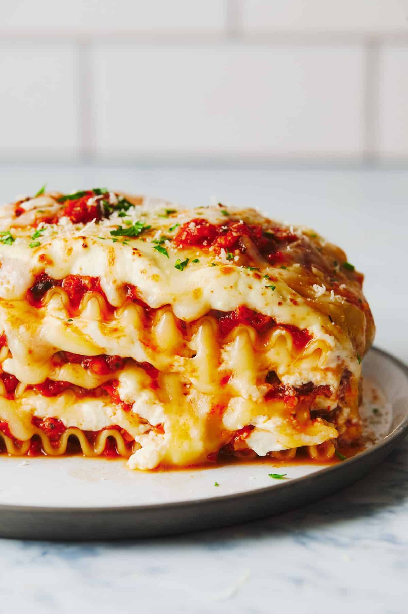

Vegetarian Lasagna

Ingrédients
For the roasted vegetables:
- 2 medium zucchini, sliced into half-moons
- 2 medium carrots, thinly sliced
- 1 red bell pepper, chopped
- 1 yellow bell pepper, chopped
- 1 small eggplant, diced
- 1 medium onion, sliced
- 3 tbsp olive oil
- Salt & pepper
- 1 tsp dried oregano (or Italian herbs)
For the tomato sauce:
- 2 tbsp olive oil
- 3 cloves garlic, minced
- 1 large can (28 oz / 800 g) crushed tomatoes
- 2 tbsp tomato paste
- 1 tsp sugar (optional, balances acidity)
- 1 tsp dried basil or oregano
- Salt & pepper
For the béchamel (white sauce):
- 4 tbsp butter
- 4 tbsp flour
- 4 cups milk (warm)
- 1 pinch nutmeg (optional)
- Salt & pepper
For assembling:
- 12 lasagna noodles (pre-cooked or oven-ready)
- 2 cups mozzarella cheese, shredded
- 1 cup parmesan cheese, grated
Instructions
1. Roast the vegetables
- Preheat oven to 400°F (200°C).
- Toss zucchini, carrots, peppers, eggplant, and onion with olive oil, salt, pepper, and oregano.
- Spread on a baking sheet and roast for 20–25 minutes until tender and slightly caramelized.
2. Make the tomato sauce
- Heat olive oil in a saucepan. Add garlic, sauté 1 min.
- Stir in crushed tomatoes, tomato paste, herbs, and sugar (if using).
- Simmer uncovered for 15-20 minutes. Season to taste.
3. Prepare the béchamel
- In a saucepan, melt butter. Whisk in flour and cook 1 min.
- Gradually add warm milk, whisking constantly until smooth and thickened (about 8 min).
- Season with salt, pepper, and nutmeg.
4. Assemble the lasagna
- Grease a 9x13-inch baking dish.
- Spread a thin layer of tomato sauce at the bottom.
- Layer noodles → roasted vegetables → tomato sauce → béchamel → sprinkle of cheese.
- Repeat layers until all ingredients are used, finishing with béchamel and a generous topping of mozzarella + parmesan.
5. Bake
- Cover with foil and bake at 375°F (190°C) for 30 minutes.
- Remove foil and bake another 15 minutes until golden and bubbling.
- Rest 10 minutes before slicing.
Home